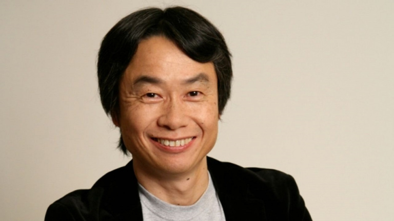

Les deux frères
Mario
Le personnage de Jumpman est rebaptisé Mario dans Donkey Kong Jr. sorti en arcade en 1982. C'est la seule fois où il endosse le rôle d'antagoniste du personnage contrôlé par le joueur, en l'occurrence le fils de Donkey Kong, dont le but est de délivrer son père captif de Mario. Le retour au premier plan de Mario se fait en 1983 dans Mario Bros., épisode qui voit également l'apparition de son frère Luigi. Dans ce jeu, les deux frères ne peuvent pas sauter sur leurs ennemis, mais doivent les faire trébucher pour ensuite les éjecter hors de l'écran. Le succès est important, mais Miyamoto considère que son personnage n'est qu'un élément se déplaçant, l'important étant de créer un gameplay autour. C'est deux ans plus tard que Mario connaîtra véritablement la notoriété, sur la première console de Nintendo, la Famicom (et sa version occidentale, la NES).
Luigi
Devenu personnage très secondaire, il sera ainsi absent du jeu Super Mario RPG (mais présent dans le générique de fin et en cameo), et sera écarté de Super Mario 64. À ce sujet, Luigi est au centre de rumeurs affirmant qu'il est possible de l'apercevoir dans le jeu, ce qui n'a jamais été confirmé. D'ailleurs, Nintendo a dit clairement que toutes les astuces pour débloquer Luigi dans ce jeu sont fausses et qu'il n'est pas présent dans le jeu (à moins que vous n'utilisiez un code de triche pour que Mario change la couleur de son costume). Nintendo rectifiera le tir en intégrant Luigi comme personnage jouable dans le remake sur Nintendo DS de Super Mario 64 (Super Mario 64 DS).
article 3
